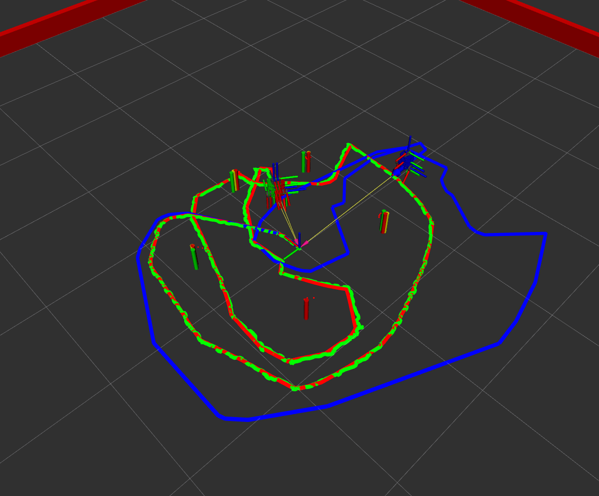
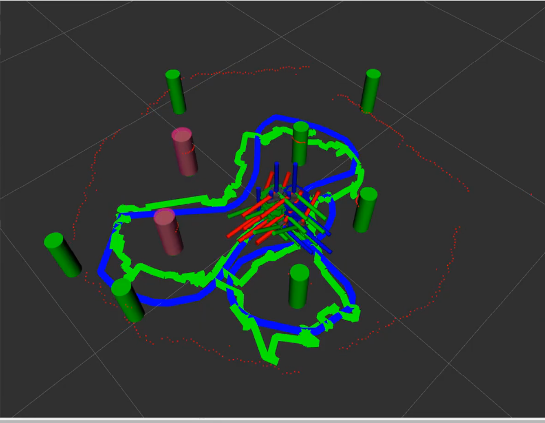

ME 495: Sensing, Navigation, and Machine Learning for Robotics | Michael Jenz | Winter 2026
Skills: ROS 2, C++, Extended Kalman Filter, LiDAR Processing, SLAM, Sensor Fusion
This project is the culmination of ME 495: Sensing, Navigation, and Machine Learning for Robotics. It implements Simultaneous Localization and Mapping (SLAM) using an Extended Kalman Filter (EKF) on a Turtlebot3, validated in both simulation and on hardware.
The system detects cylindrical obstacles from raw 2D LiDAR point clouds, associates them with a growing landmark map, and continuously corrects the robot's estimated pose. In simulation, the SLAM estimate converged to within 1 mm of ground truth. On hardware, it outperformed pure odometry by a factor of three in final position accuracy.
All three robot representations — ground truth (red), odometry (blue), and SLAM (green) — are visualized simultaneously in RViz. The tables below summarize final position error after a closed-loop traversal of the environment.


| Estimate | x (m) | y (m) | θ (°) | Distance from Truth |
|---|---|---|---|---|
| Ground truth (red) | 0.0725 | −0.0153 | −2.469 | — |
| Odometry (blue) | 0.2698 | 0.4571 | −2.813 | 0.512 m |
| SLAM (green) | 0.0723 | −0.0149 | −2.435 | 0.0005 m (< 1 mm) |
| Estimate | x (m) | y (m) | θ (°) | Distance from Start |
|---|---|---|---|---|
| Odometry (blue) | −0.0225 | 0.0613 | −0.555 | 0.065 m |
| SLAM (green) | 0.0264 | −0.0016 | −1.822 | 0.026 m (3× improvement) |
The project is organized as a set of ROS 2 packages and C++ libraries that each handle a distinct stage of the SLAM pipeline:
nusimnuturtle_controlturtle_control node converts cmd_vel messages into wheel commands for both the simulator and the physical robot.odometry node integrates encoder readings using differential-drive kinematics to produce a continuous pose estimate — the baseline that SLAM is measured against.detectlibRaw LiDAR scans are processed in three stages before being handed off to the EKF:
CircularClassifier uses the inscribed angle theorem — points on a circle subtend a constant angle to the chord — to distinguish circular obstacles from linear features such as walls.CircularRegressor fits a circle to the cluster of points, outting the radius and center of the potential obstacle.ekflib / nuslamImplementing all these algorithms was difficult, however, getting them working on hardware was even more so. Even when starting with parameters tuned in simulation, the 2D LiDAR sensor on the turtlebot3 was noisier and lead to more unpredictable behavior from the object detection algorithm. In this process, I found out how critical the data association step is. If the algorithm mis-identified an obstacle it would send the SLAM estimate across the map. To combat these issues I needed to add much higher thresholds to my obstacle filtering, which in the end was able to get good enough performance.
In the results video you can see how infrequently the algorithm identifies a new obstacle (a pink obstacle pops up) because of these strict filtering parameters. Even so, the algorithm mistakes the walls at times for obstacles. Given the time constraints I was not able to tune my algorithm further, however, these extra obstacles should not affect the performance of the algorithm since they are initialized with extremely high uncertaintly.
I learned so much while working on this project, after starting with very little 'true' c++ experience. Looking forward I am excited to work on more challenges like these in the field of robotics!